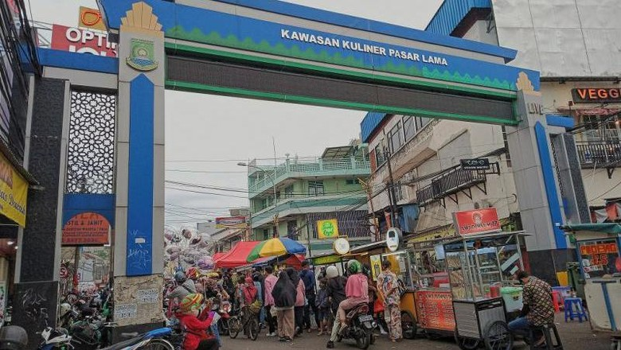

| Gambar | Nama | Lokasi | Deskripsi |
|---|---|---|---|
| Jalan Sabang | Jakarta | Area di sepanjang Jalan Sabang, Jakarta, dipenuhi ragam kuliner ikonik. Misalnya Sate Jaya Agung, Ben Seafood, Bakmi Roxy, dan sebagainya. Harga makanan di sana cukup ramah di kantong. | |
| Pecenongan | Jakarta | Wilayah Pecenongan di Jakarta sudah terkenal dengan wisata kulinernya sejak tahun 1970-an. Di sana dapat ditemui bubur Kwang Tung, Martabak Pecenongan, hingga aneka olahan seafood lezat. Menu bubur kepiting dan ayam Hainan dapat ditemukan mudah di tempat ini. | |
|  | Pasar Lama | Tangerang | Pasar Lama Tangerang jadi tempat bertemunya jajanan rakyat. Menu lokal lebih banyak ditemui seperti ketoprak, bakso, nasi goreng, sempol ayam, sampai laksa. Jenis jajanan minuman juga beragam, misalnya susu kedelai, kacang hijau, dan es alpukat kocok. |